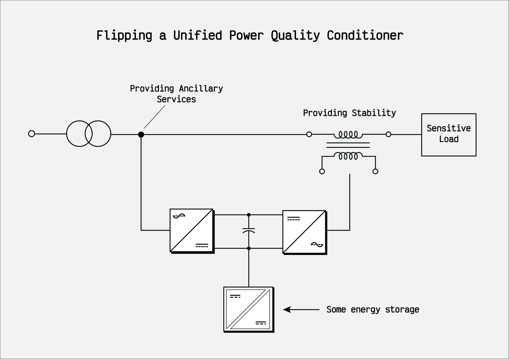

Flipped unified power quality conditioner (F-UPQC)
A left-shunt UPQC for active distribution networks: the shunt converter faces the grid and provides ancillary services, the series converter faces the load and stabilises its voltage. Simscape bench plus an IEEE-format paper.

What it is
In the conventional UPQC the series converter faces the grid and the shunt converter faces the load. Flipping the arrangement (a left-shunt UPQC in Akagi's classification) changes what each converter is good for: the shunt converter, now on the grid side, can offer reactive power, harmonic mitigation and fault-ride-through behaviour to the distribution system operator, while the series converter, now on the load side, stabilises the load voltage against sags and swells.
A shared DC link with a battery behind an isolated DC/DC converter makes the unit usable for local flexibility services as well.
What the repository contains
- The complete Simulink/Simscape bench of the system: three-phase shunt active filter, series voltage stabiliser with its transformer, DC link with DAB and battery, grid emulator with fault-ride-through test cases.
- Control code in C: dq-PLL, current controllers, moving-average filters, double-integrator observer.
- The paper A Flipped Unified Power Quality Conditioner for Active Distribution Networks: Topology, Modelling, and Control Strategy (IEEE conference format, LaTeX and PDF), which derives topology, model and control.
Video
 Flipped UPQC simulationGrid and load quantities during a disturbance · YouTube
Flipped UPQC simulationGrid and load quantities during a disturbance · YouTube